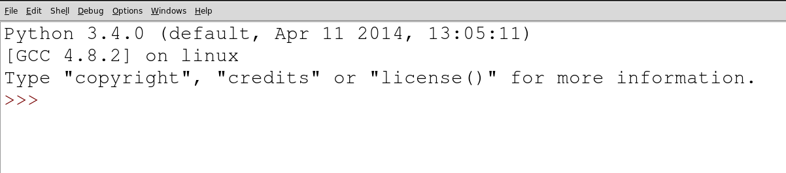

Cryptography
1 Coding the Caesar Cipher
Learn It
- Now you know all about the Caesar Cipher, we're going to try and implement it in Python.
- We'll start off with some Python basics.
Try It
- Find the installed version of IDLE on your computer.
- IDLE is the Interactive Development Environment (IDE) that comes with Python.
- IDLE is basically a
text editorand aninterpreter(a program that can run python scripts) - The first window that opens up is the interpreter.

- If we just want to write some code, and don't care about saving it, then we can write directly into the IDLE interpreter.
Learn It
- The Caesar Cipher is a substitution cipher, meaning that one character in the alphabet is exchanged for another character.
- In Python, characters are called
Strings. - Strings can be letters, combinations of letters, symbols and even numbers.
- So that Python can tell the difference between, for instance, the number 123 and the string 123, we always surround strings with single or double quotes.
#These are all strings "ABC" 'ABC' '123' '+=.A2' 'The quick brown fox jumped over the lazy dog'
- We can display strings using the inbuilt
print()function
Try It
- Have a go at writing the lines of code that are written below into your interpreter.
print(Hello World!) print('Hello World!') print(123) print('123') print(5+5) print('5+5') print('5'+'5') print(A+B) print('A+B') print('A'+'B')
Badge It - Silver
- Which line(s) of code produce errors and why?
- Which line(s) of code perform arithmetic?
- Look up the term
concatenation. What does it mean? - Which lines of code perform concatenation?
Learn It
- Now you know what strings are, we need a way of storing them.
- We can use a variable to store our strings.
Code It
- In IDLE, select File>New.
- This gives you a text editor to write your scripts in.
- Save your file straight away and call it CC-encrypt.py
- The .py is important.
- Let's declare our first variable
trueAlphabet = 'abcdefghijklmnopqrstuvwxyz'
- Save your file again.
Run It
- Once you've declared your variable, press the
F5key on your keyboard to run your script. - Now switch back to the interpreter and try the following.
print(trueAlphabet)
- Your string should then be printed.
Try It
- Go back to your script and declare a new variable called
shiftedAlphabet - Set it to a shifted Alphabet, as used in the Caesar Cipher.
ghijklmnopqrstuvwxyzabcdeffor instance. - We'll also need a plaintext message to encrypt. Let's keep it simple for now and use a single word. Declare a variable called
plainTextand set it to the string 'hello' (all lowercase) - Lastly we'll need an empty string for our ciphertext.
cipherText=""
Learn It
- Our algorithm for the Caesar Cipher will look something like this. (Note - this is structured English and not Python. Don't try to run it.)
- Remember
indexis just a computer science term for position
1. Look at the first character in the plainText. 2. Find out the character's index in the trueAlphabet. 3. Find the corresponding character at the same index in shiftedAlphabet. 4. Add the corresponding character to the end of the cipherText string. 6. Repeat steps 1 through 4 for the next character in plainText until you reach the end.
- In the next section we'll look at how to code these individual parts.
Code It
- Let's figure out how to write this in Python.
- The next section will take you through the individual elements of the algorithm
2 For loops
Learn It
- The first and fifth lines of the algorithm are where we'll start.
1. Look at the first character in the plainText. ... 6. Repeat steps 1 through 4 for the next character in plainText until you reach the end.
- We're going to need a loop for this, and the best type of loop to use here is a
forloop.
Try It
- You should still have your interpreter open. If you don't then go back to your script and hit
F5again. - Let's have a look at the structure of a python for loop.
- Try the following line of code.
for i in 'Hello World!': print(i)
- In structured English this code would be the equivalent of saying
1. For the next character in the string Hello World 2. Assign the variable i to that character 3. Print out the value of i 4. Repeat steps 1 to 3 until we get to the end of the string.
- We often use the variable
iin for loops, but it doesn't make for the most readable code. Let's use a different variable name to make our code more legible.
for letter in 'Hello World!': print(letter)
- This is called
iteration, we're iterating over the string 'Hello World' - Python is sensitive to white space. The tab before the print line is important.
- Anything that is 'tabbed' beneath the for loop is part of the loop. If we remove the tab we'll get different results.
- We can also iterate over variables.
Code It
- Go back to your script. Let's add a
forloop in and see how important the tabs are.
trueAlphabet = 'abcdefghijklmnopqrstuvwxyz' shiftedAlphabet = 'defghijklmnoqprstuvwxyzabc' plainText = 'hello' cipherText = '' for letter in trueAlphabet: print(letter)
- run this code to see what happens.
- Now let's make a little change so we can see how important the tabs are.
for letter in plainText: print('Give me an:') print(letter) print('What do we have?') print(plainText)
- Run your code.
Badge It - Gold
- With reference to the code you've written, explain in your own words when and why some of the commands are repeated within the for loop and others are only run once.
3 Indices
Learn It
- So we now have a method of iterating over every character in the plaintext.
- Now we have to tackle this part of the algorithm
2. Find out the character's index in the trueAlphabet.
Code It
- Finding the index of an item is extremely easy in Python.
- We just need to use the built-in method
index() - Try this in your interpreter
trueAlphabet.index('a') trueAlphabet.index('f')
- Let's use that in our for loop.
for letter in plainText: position = trueAlphabet.index(letter) print(position)
- Now we know the position each letter in the plaintext holds in the true alphabet, we can get the letter from the equivalent shifted alphabet.
for letter in plainText: position = trueAlphabet.index(letter) shiftedLetter = shiftedAlphabet[position]
- Then we can add that shifted letter to the end of the cipher text.
for letter in plainText: position = trueAlphabet.index(letter) shiftedLetter = shiftedAlphabet[position] cipherText = cipherText + shiftedLetter print(cipherText)
- The last line (outside the for loop) will print out the complete cipher text.
Run It
- Run the code and look at the output.
- Has it worked?
- What happens if you try to make the plaintext two words like 'Hello World"?
Badge It - Platinum
- Now that you've made some code to encrypt using the Caesar Cipher, we'll need some code to decrypt as well.
- Create a new Python File called CC-Decrypt.py
- Now create the code that can decrypt the plaintext generated by your first program.